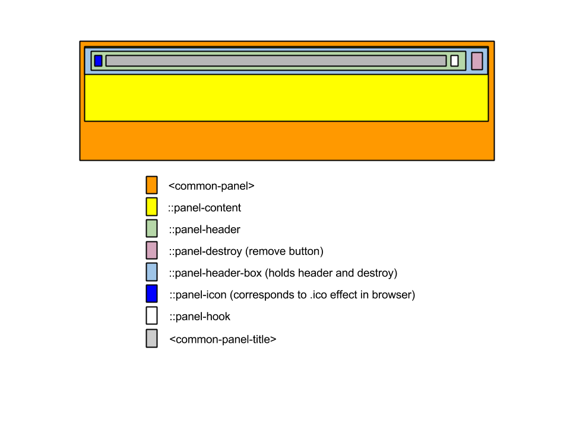
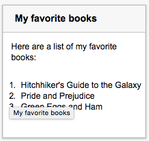

This document describes a universal markup attempting to pave the cowpath
we observe for a construct called a <common-panel>
which contains what appear to be common attributes, and a single selection interaction paradigm for a collection of them called a
<common-panel-set>. Defining these will allow editors to create a reusable
set of declarative code which remains semantic, widely stylable
in visual terms while retaining a conceptual and physical separation that retains
the important accessibility benefits for all of them.
When editing a document, an author attempts to mark it up semantically and control a separation of visual aspects through CSS. This allows user-agents and tools to use the same semantic data to provide any number of affordances for accessibility, navigation, styling and interaction. Over time, user interface designers have created a number of common metaphors for visually managing and providing single selection/focus navigation through a collection of titled 'blocks', which are, themselves more complex and meaningful than it might seem at first glance.
Currently we have a number of useful building block elements like
<section> and <h1> which are high-level in
their own right, but still beneath the level of describing many common constructs.
It is useful then to attempt to extract more complex, higher-level constructs as
we see them emerge. Doing so, expands an author's ability to easily describe common things, and the ability of user-agents, tools and search engines to make
sense of them.
The concept of a panel exists in traditional print media and has carried over into Web design. Over time, UI/UX designers have created a number of common visual metaphors for managing interaction with a collection of panels: Accordions, tabs, decks and carousels are just a few.
Because the art of creating a good user interface is something we are all still
collectively trying to figure out, the history and development of these metaphors
have generally taken the approach of independently naming these and solving each
problem independently: In the realm of custom elements, this means that you would
have independent tags for each. However, this obscures the underlying fact that
in virtually every way they are conceptually identical.
The WAI-ARIA Best Practices document, in fact,
defines accordions as a kind of tablist and in terms of keyboard
navigation says that UAs should treat up/down and left/right navigation for tabs and
accordions as interchangeable.
With the advent of ever more variant screen sizes, interaction methods, responsive design we now have designs which switch their visual representation of these metaphors based on the current size of the screen, rather than being constant. For example, on a wide screen, a tabbed interface may seem like a natural choice, whereas the same interface is more natural as an accordion, or a deck on a small one. This further underscores their 'sameness'.
These observations highlight the fact that their differences are primarily visual, not semantic: How could a tabset suddenly become a wholly different thing based on screen resizing? What difference does it make to the user of a screen reader that it is one or the other if their interaction model is unchanged? And, if the difference is visual, shouldn't control of this be in the domain of CSS, rather than markup?
This proposal attempts to solve the issues described in this introduction by defining these common elements and providing a separation of concerns which we believe strikes the right balances.
All authoring guidelines, diagrams, examples, notes, and sections marked "informative" in this specification are informational. Everything else in this specification is "normative" as described in [[!qaframe-spec]]. The key words "must", "should", "should not" and "may" in this specification are to be interpreted as described in [[!RFC2119]].
The Interface Definition Language (IDL) fragments in this specification must be interpreted as required for conforming IDL fragments, as described in the Web IDL specification. [[!WEBIDL]]
This document uses the terms accessible and accessibility in the sense of ensuring people with disabilities can use the Web. Further information is available, e.g. Introduction to Web Accessibility.
The panels specification describes a number of elements and attributes that give authors the ability to present panels or collections of panels in a semantically consistent way.
The concept of a content panel is clearly established in both online and offline paradigms. It recurs in print and digital media, in documents and applications.
A panel represents a particular composed tree of DOM elements and pseudo elements around a chunk of content that can be displayed in a common fashion within a UI, and which behaves consistently in user agents and assistive technologies and provides optional functionality for managing operations like expansion/collapse or removal from the user interface entirely.

On it's own, a panel may be used anywhere sectioning content is used, it is granted an aria-role="group". Elements and pseudo elements of the composite tree of a panel are.
A basic panel may be adapted with visual or aural styles, but it remains a cohesive semantic thing. It is the basic building block for the use cases and design patterns in the remainder of this document.
<common-panel>
<common-panel-title>My favorite books</common-panel-title>
<p>Here are a list of my favorite books:
<ol>
<li>Hitchhiker's Guide to the Galaxy</li>
<li>Pride and Prejudice</li>
<li>Green Eggs and Ham</li>
</ol>
</p>
</common-panel>
A removable panel has the is-removable attribute assigned to it. When the is-removable attribute is present, a mechanism to let the user dismiss the panel is provided. When the panel is dismissed by the user it is removed from the DOM.
<common-panel is-removable>
<common-panel-title>Reminder</common-panel-title>
<p>Today is the first day of the rest of your life.</p>
</common-panel>
The is-removable attribute is a standard platform Boolean attribute. The presence of is-removable represents the true state (the panel can be removed), and the absence of the attribute represents the false value (the panel cannot be removed).
an expandable/collapsible panel has the expanded-state attribute assigned to it. When the expanded-state attribute is present, the panel title becomes a control that allows the panel to be expanded/collapsed.
If the expanded-state attribute is present but has no value, the starting state of the panel is collapsed. The expanded-state attribute may be set explicitly to "open".
<common-panel expanded-state>
<common-panel-title>Today's News</common-panel-title>
<p>Something <a href="amazing.html">amazing</a>happened on the Internet today...</p>
</common-panel>
When placed as a child of a <common-panel-set> element,
the panel set will manage the selection/activation of a single <common-panel> at a time,
effectively managing their expansion-state as panels and their Shadow DOM descendant's corresponding WAI-ARIA aria-collapse. In otherwords, <common-panel> element
children of a <common-panel-set> are automatically collapsable.
By default, the first <common-panel-set> is considered expanded (not collapsed).
Because the parser processes elements in document order, any subsequent claims of
expansion trump the first by removing the attribute from siblings and setting their collapse-state="closed". Through this means, any number of styles are achievable:
Some examples of visual views on a single select <common-panel-sets> are
If HTML authors are encouraged to follow this separation, it inevitably begs the question about how CSS authors can correctly manage which type of display the element takes on in which conditions. This is currently "up in the air" with one (not especially good, but currently prollyfilled) answer here.
Define what aria/interactions a lone panel should have, if any.<common-panel-set id="foo">
<common-panel>
<common-panel-title>Panel #1</common-panel-title>
<p>If you can read this, tab #1 is expanded</p>
</common-panel>
<common-panel>
<common-panel-title>Panel #2</common-panel-title>
<p>If you can read this, tab #2 is expanded</p>
</common-panel>
</common-panel-set>
The <common-panel-set> exposes a DOM method like the <select> element,
exposing .basic_panels collection, a basic_selectedIndex property, and a basic_selectedPanel property.
<common-panel-set>
<common-panel id="bar">
<common-panel-title>Panel #1</common-panel-title>
<p>If you can read this, tab #1 is expanded</p>
</common-panel>
<common-panel collapse-state="expanded">
<common-panel-title>Panel #1</common-panel-title>
<p>If you can read this, tab #2 is expanded</p>
</common-panel>
<common-panel-set>
<script>
var panelSet = document.querySelector("#bar");
console.log(panelSet.selectedIndex); // 1
console.log(panelSet.panels.length); // 2
console.log(panelSet.selectedPanel); // the selected basic panel element
<script>
Content TBC.
Content TBC.